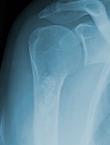
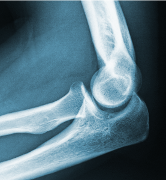
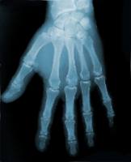
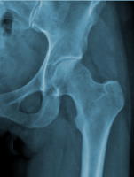
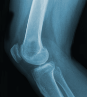
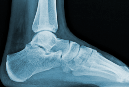

Le coude :
Partie extérieure de l'articulation du bras avec l'avant-bras, opposée à la saignée. Le coude est formé par l‘ articulation de l‘ humérus avec le cubitus et le radius.
Le poignet :
Articulation qui forme la jonction du bras et de la main.
La hanche :
Partie du corps formée par l'évasement de l'os iliaque entre la cuisse et le tronc. Le genou :
Articulation de la cuisse avec la jambe.
La cheville :
La cheville est un mécanisme complexe, qui réunit les deux os de la jambe à l‘ astragale. Les extrémités inférieures du tibia et du péroné( os externe), solidement unies par l‘ articulation péronéo-tibiale inférieure, forment une mortaise dans laquelle pénètre, tel un tenon, l‘ astragale. La mortaise tibio-tarsienne permet les mouvements de flexion et d‘ extension du pied. 